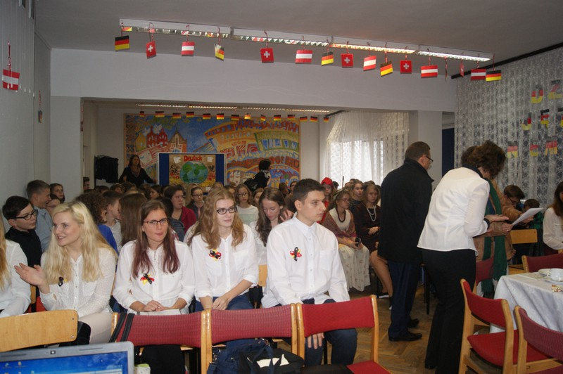

Gazeta ZSO nr II w Opolu
Numer 4/2017
Dwójka szkołą dwujęzyczną

Jednym z 9 profili klas pierwszych w roku szkolnym 2017/2018 jest profil dwujęzyczny, który w II Liceum Ogólnokształcącym w Opolu ma już wieloletnią tradycję.
Dlaczego warto wybrać klasę o tym profilu, zapytaliśmy uczniów obecnej drugiej oraz trzeciej klasy dwujęzycznej, wkrótce absolwentów naszej szkoły.
Argumentów ich zdaniem jest wiele, chociażby fakt, iż mają 8 godzin języka niemieckiego w tygodniu, co pozwala na intensywne i skuteczne pogłębianie wiedzy i umiejętności językowych. Ponadto przedmioty takie jak: Historia i społeczeństwo, wiedza o społeczeństwie, geografia, kultura i cywilizacja, przedsiębiorczość czy też podstawy ekonomii nauczane są po niemiecku. Uczniowie podkreślają, że dwujęzyczność często mylnie kojarzona jest wyłącznie z przedmiotami humanistycznymi, wręcz przeciwnie uczniowie klasy dwujęzycznej mogli wybrać przedmioty w ramach rozszerzeń kierując się swoimi zainteresowaniami lub przyszłym kierunkiem studiów. Maturę z języka niemieckiego uczniowie mogą zdawać na poziomie podstawowym, rozszerzonym lub dwujęzycznym.
Kończąc edukację w liceum absolwenci klasy dwujęzycznej posługują się nie tylko językiem niemieckim w mowie i piśmie na poziomie najczęściej B2/C1, ale są również bardzo dobrze przygotowani do matury z wybranych przez siebie przedmiotów.
Dużą popularnością wśród uczniów klas dwujęzycznych, jak i pozostałych cieszy się, organizowany przez niemieckie ministerstwo oświaty w ramach współpracy międzynarodowej egzamin z języka niemieckiego Deutsches Sprachdiplom II. Młodzież zaznacza, że aby pomyślnie zdać egzamin w części pisemnej i ustnej muszą się solidnie przygotować, co jest możliwe w ramach lekcji języka niemieckiego. Certyfikat DSD II uznawany przez zdecydowaną większość uczelni wyższych niemieckiego obszaru językowego, a ponadto mile widziany atut u przyszłych pracodawców, to wystarczająco przekonujące argumenty, aby podjąć trud zdawania egzaminu. Warto również podkreślić, że II Liceum to jedyna szkoła w Opolu przygotowująca do tegoż egzaminu.
Uczniowie klasy dwujęzycznej mają również wiele możliwości udziału w różnego rodzaju konkursach m. in. „Pokaż nam język”, „Wielkie dyktando języka niemieckiego” oraz Ogólnopolska Olimpiada Języka Niemieckiego, co sprawia im wiele satysfakcji. Dzięki ich ciężkiej pracy i zaangażowaniu nauczycieli zajmują często wysokie lokaty. Rok rocznie naszą szkołę w Poznaniu reprezentuje kilku finalistów tejże olimpiady.
W opinii uczniów profil dwujęzyczny nie obliguje, a tym samym nie ogranicza ich do podejmowania studiów na filologii germańskiej lecz otwiera wiele możliwości zastosowania języka niemieckiego w innych dziedzinach.
Uczniowie doceniają także fakt, iż szkoła zapewnia im nie tylko wysoki poziom nauki, ale daje również szeroki wachlarz możliwości rozwoju osobistego. Młodzież z łatwością łączy chociażby naukę w szkołach muzycznych z nauką w liceum, udziela się charytatywnie i może realizować się w różnych dyscyplinach sportowych.


ul. Pułaskiego 3
45-048 Opole
tel. 077 45 422 86
fax 077 02 18 87
e-mail:
bez.tytulu@o2.pl
Ola Orłowska
DTP
Michał Woś
Opiekun
mgr Lucyna Rudnik
Ola Orłowska, Ania Cichy, Dagmara Cioska, Julia Nowicka, Julia Marcinów, Hania Szarzewicz, Michał Woś, Bartek Lipnicki, Jonasz Mularz, Paweł Kubacki, Mateusz Pietruszyński, Mateusz Orlik